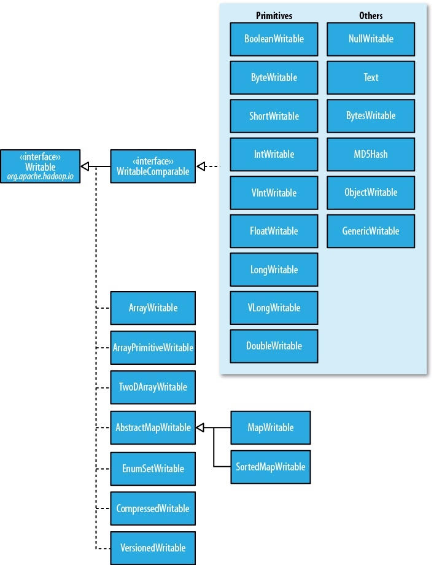

Hadoop: The Definitive Guide 5 - Hadoop I/O¶
1 Data Integrity¶
The usual way of detecting corrupted data is by computing a checksum(校验和) for the data when it first enters the system, and again whenever it is transmitted across a channel that is unreliable and hence capable of corrupting the data.
A commonly used error-detecting code is CRC-32 (32-bit cyclic redundancy check), which computes a 32-bit integer checksum for input of any size. CRC32 is used for checksumming in Hadoop's
Data Integrity in HDFS¶
HDFS transparently checksums all data written to it and by default verifies checksums when reading data. A separate checksum is created for every
Datanodes are responsible for verifying the data they receive before storing the data and its checksum. When clients read data from datanodes, they verify checksums as well.
In addition to block verification on client reads, each datanode runs a
You can find a file’s checksum with
LocalFileSystem¶
The Hadoop
ChecksumFileSystem¶
FileSystem rawFs = ... FileSystem checksummedFs = new ChecksumFileSystem(rawFs);

2 Compression¶
File compression brings two major benefits: it reduces the space needed to store files, and it speeds up data transfer across the network or to or from disk. When dealing with large volumes of data, both of these savings can be significant.
A summary of compression formats:
| Compression format | Tools | Algorithm | File Extension | CompressionCodec | Splittable? |
|---|---|---|---|---|---|
| DEFLATE | N/A | DEFLATE | .deflate | DefaultCodec | No |
| gzip | gzip | DEFLATE | .gz | GzipCodec | No |
| bzip2 | bzip2 | bzip2 | .bz2 | BZip2Codec | Yes |
| LZO | lzop | LZO | .lzo | LzoCodec | No |
| Snappy | N/A | Snappy | .snappy | SnappyCodec | No |
All compression algorithm exhibit a space/time trade-off. Splittable compression formats are especially suitable for MapReduce.
Codecs¶
A codec is the implementation of a compression-decompression algorithm. In Hadoop, a codec is represented by an implementation of the
- To compress data being written to an output stream, use the
createOutputStream(OutputStream out) method to create aCompressionOutputStream - Conversely, to decompress data being read from an input stream, call
createInputStream(InputStream in) to obtain aCompressionInputStream .
The code below illustrates how to use the API to compress data read from standard input and write it to standard output.
import org.apache.hadoop.conf.Configuration; import org.apache.hadoop.io.IOUtils; import org.apache.hadoop.io.compress.CompressionCodec; import org.apache.hadoop.io.compress.CompressionOutputStream; import org.apache.hadoop.util.ReflectionUtils; // vv StreamCompressor public class StreamCompressor { public static void main(String[] args) throws Exception { String codecClassname = args[0]; Class<?> codecClass = Class.forName(codecClassname); Configuration conf = new Configuration(); CompressionCodec codec = (CompressionCodec) ReflectionUtils.newInstance(codecClass, conf); CompressionOutputStream out = codec.createOutputStream(System.out); IOUtils.copyBytes(System.in, out, 4096, false); out.finish(); } }
We can try it out with the following command line, which compresses the string “Text” using the
export HADOOP_CLASSPATH=/Users/larry/JavaProject/out/artifacts/StreamCompressor/StreamCompressor.jar echo "Text" | hadoop com.definitivehadoop.compression.StreamCompressor org.apache.hadoop.io.compress.GzipCodec | gunzip
If you are using a native library and you are doing a lot of compression or decompression in your application, consider using
Compression and Input Splits¶
If a compressed file using a format that does not support splitting, say gzip format, MapReduce will not try to split the gzipped file, at the expense of locality: a single map will process all blocks containing the file, most of which will not be local to the map.
For an LZO file, in spite of not supporting splitting, it is possible to preprocess LZO files using an indexer tool that comes with the Hadoop LZO libraries.
Using Compression in MapReduce¶
In order to compress the output of a MapReduce, job you can use the static convenience methods on
Application to run the maximum temperature job producing compressed output:
public class MaxTemperatureWithCompression { public static void main(String[] args) throws Exception { if (args.length != 2) { System.err.println("Usage: MaxTemperatureWithCompression <input path> " + "<output path>"); System.exit(-1); } Job job = Job.getInstance(); job.setJarByClass(com.definitivehadoop.weatherdata.MaxTemperature.class); FileInputFormat.addInputPath(job, new Path(args[0])); FileOutputFormat.setOutputPath(job, new Path(args[1])); job.setOutputKeyClass(Text.class); job.setOutputValueClass(IntWritable.class); /*[*/ FileOutputFormat.setCompressOutput(job, true); FileOutputFormat.setOutputCompressorClass(job, GzipCodec.class);/*]*/ job.setMapperClass(com.definitivehadoop.weatherdata.MaxTemperatureMapper.class); job.setCombinerClass(com.definitivehadoop.weatherdata.MaxTemperatureReducer.class); job.setReducerClass(com.definitivehadoop.weatherdata.MaxTemperatureReducer.class); System.exit(job.waitForCompletion(true) ? 0 : 1); } } //^^ MaxTemperatureWithCompression
$ export HADOOP_CLASSPATH=/Users/larry/JavaProject/out/artifacts/MaxTemperatureWithCompression/MaxTemperatureWithCompression.jar $ hadoop com.definitivehadoop.compression.MaxTemperatureWithCompression /Users/larry/JavaProject/resources/HadoopBook/ncdc/sample.txt output
3 Serialization¶
See concepts of serialization and deserialization in Head First Java Chapter 14.
Serialization is used in two quite distinct areas of distributed data processing: for interprocess communication and for persistent storage.
In Hadoop, interprocess communication between nodes in the system is implemented using remote procedure calls (RPCs). The RPC protocol uses serialization to render the message into a binary stream to be sent to the remote node, which then deserializes the binary stream into the original message. In general, four desirable properties are crucial for an RPC serialization and persistent storage:
| Properties | PRC Serialization | Persistent Storage |
|---|---|---|
| Compact | makes the best use of network bandwidth | make efficient use of storage space |
| Fast | little performance overhead | little overhead in reading or writing |
| Extensible | meet new requirements | transparently read data of older formats |
| Interoperable | support clients written in different languages | read/write using different languages |
Hadoop uses its own serialization format,
The Writable Interface¶
Writable Classes¶
